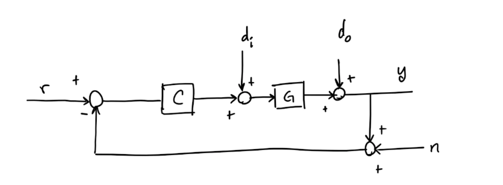

Source: MAE511_HW2.pdf (3 pages). The aircraft model and a separate textbook problem are not included in the uploaded packet; those sections explain the exact required procedure and identify the missing data.
Problem 1 — Aircraft trim, linearization, and transfer-function properties
In this problem, we will explore linearization of a nonlinear aircraft model using Simulink. On canvas, there is a matlab video titled, "Trim, Linearization, and Control Design for an Aircraft". Watch the video, it’s only 6 minutes long, and follow their instructions for trimming the aircraft. The Simulink file used in the video can be downloaded directly from the video or from Canvas. Ensure you add the unzipped files to your MATLAB path so you don’t get any errors.
For this exercise, we are only interested in generating a linear model of the elevator to pitch rate transfer function (as shown in the video). After you’ve generated the appropriate transfer function, use the minreal function to cancel any pole/zero pairs (as shown in the video), then answer the following questions.
- How many zeros does the transfer function have?
- How many poles does the transfer function have?
- What is the relative degree of the elevator to pitch rate transfer function?
- What is the DC gain of the elevator to pitch rate transfer function?
- Use MATLAB’s step() command to plot the pitch rate response to a unit step input. Include this plot as part of your homework submission.
State the missing aircraft-model dependency. List the exact linearized state-space operations and distinguish minimal input/output poles from internal modes.
Worked solution — answered by question part
Part (1) — Number of zeros
Not numerically determinable from the PDF: Obtain the trimmed and minimized aircraft model \(G(s)\), then count the finite roots of its numerator (or use numel(zero(sys))). The aircraft model is external to the supplied document.
Part (2) — Number of poles
Not numerically determinable from the PDF: Count the poles of the same minreal-processed model (or numel(pole(sys))).
Part (3) — Relative degree
Answer method: For the reduced proper transfer function, subtract the numerator degree from the denominator degree: \(r=n_p-n_z\). A number requires the missing linearized model.
Part (4) — DC gain
Answer method: Evaluate \(G(0)\) if finite and defined, using dcgain(sys) in MATLAB. The numerical value depends on the missing Simulink data.
Part (5) — Step response plot
Required command: step(sys); grid on. Label the axes as time and pitch rate, and state that the input is a unit elevator-deflection step. The actual curve cannot be reproduced from the assignment text alone.
Additional reasoning, cautions, and checks
The assignment asks you to run the separately supplied Simulink aircraft model, trim it, linearize it from elevator deflection \(\delta_e\) to pitch rate \(q\), and call minreal. The resulting ninth-order transfer function is not present in this PDF, so its numerical poles, zeros, relative degree, DC gain, and step response cannot be determined honestly here.
The procedure is: (1) choose the flight condition and trim point; (2) define input \(\delta_e\) and output \(q\); (3) obtain \(A,B,C,D\) at that equilibrium; (4) compute \(G_{q\delta_e}(s)=C(sI-A)^{-1}B+D\); (5) remove numerically cancelling pole-zero pairs with an appropriate tolerance; (6) extract zeros/poles, relative degree \(n_p-n_z\), gain \(G(0)\) when defined, and the unit-step response. Do not count a pole cancelled by minreal as a pole of the minimal input-output realization.
% Replace syslin with your actual elevator-to-pitch-rate linearized model.
sys = minreal(syslin);
[z,p,k] = zpkdata(sys,'v');
nzeros = numel(z); npoles = numel(p);
relative_degree = npoles - nzeros;
dc_gain = dcgain(sys);
figure; step(sys); grid on;
title('Pitch rate due to unit elevator step');
If you provide the Simulink file or its transfer function, this section can be completed numerically.
Self-check: Were unavailable model parameters explicitly left unknown?
Problem 2 — Differential equations to transfer functions
Turn the following ordinary differential equations into transfer functions.
- \(m\ddot x+c\dot x+kx=u+b\dot u\)
- \(\dddot y+\ddot y+y=u\)
- \(\ddot x+2\zeta\omega_n\dot x+\omega_n^2x=\omega_n^2u\)
Take zero-initial-condition Laplace transforms carefully; check the number of derivative dots and the sign of each coefficient.
Worked solution — answered by question part
Part (1) — Transfer function for mass–spring–damper with input derivative
Use zero initial conditions so \(\mathcal L\{\dot x\}=sX\) and \(\mathcal L\{\ddot x\}=s^2X\). For \(m\ddot x+c\dot x+kx=u+b\dot u\), collect \(X\) and \(U\):
The input derivative produces a numerator zero at \(s=-1/b\) (for \(b\neq0\)). This affects the transient even if the poles are unchanged.
Part (2) — Third-order output differential equation
The second equation in the uploaded assignment is \(\dddot y+\ddot y+y=u\), not a second-order equation. Taking its Laplace transform under zero initial conditions gives a third-order transfer function:
This equation describes a third-order system. Its characteristic polynomial is \(s^3+s^2+1\). The Routh first column begins \(1,1,-1,1\), so there are two right-half-plane poles: the model is unstable. The transfer function follows from the source equation; do not replace three dots by two.
Part (3) — Standard second-order system
Finally,
This normalization makes the DC gain exactly one; poles are \(-\zeta\omega_n\pm j\omega_n\sqrt{1-\zeta^2}\) for \(0<\zeta<1\).
Self-check: Do numerator/denominator orders agree with derivative orders?
Problem 3 — Textbook Problems 3.7(a,b)
Problems 3.7a,b from the 8th edition of the textbook.
Identify the unavailable textbook statement; practice the general method without guessing numeric data.
Worked solution and reasoning
Only the reference to textbook Problem 3.7(a,b) is supplied, not the statement or its diagrams. Therefore a unique solution is impossible without that page. The reusable technique is: identify the input/output variables, take zero-initial-condition Laplace transforms, isolate \(Y/U\), cancel common factors only if justified, and check numerator and denominator degrees. The absence of the textbook problem is recorded rather than replaced with a fictitious question.
Self-check: Were missing textbook quantities left unassigned?
Problem 4 — Dominant poles and time-scale separation
This problem explores the idea of a "dominant response". Consider the transfer functions shown below
- For \(a=1\), and \(b=10\), plot the step response of systems \(G_1\), and \(G_3\). Make sure the axes are labeled, a legend is present in the figure, and a title is given for the figure. (Hint: use MATLAB’s step command).
- For \(a=10\), and \(b=1\), plot the step response of systems \(G_2\), and \(G_3\). Make sure the axes are labeled, a legend is present in the figure, and a title is given for the figure. (Hint: use MATLAB’s step command).
- Using only a few sentences, comment on these results. Are these results expected?
Locate each real or complex pole and compare decay rates and residue sizes. Test which factor dominates the combined step.
Worked solution — answered by question part
Part (1) — Compare G₁ and G₃ for a = 1, b = 10
The three systems are
For \(a=1,b=10\), \(G_1\) has slow pole \(-1\), whereas \(G_2\) has poles \(-3\pm j9.54\). Their dynamics decay roughly three times faster; a large part of the composite step closely follows \(G_1\) after the quick oscillation dies away. Therefore \(G_3\) resembles the slower first-order response more than the faster second-order response, although the leading edge differs.
Part (2) — Compare G₂ and G₃ for a = 10, b = 1
For \(a=10,b=1\), \(G_1\) has pole \(-10\) and \(G_2\) has poles \(-0.3\pm j0.954\). The second-order pair is slow; \(G_3\) closely tracks \(G_2\) after the fast \(-10\) transient. Thus the dominant poles are those closest to the imaginary axis, provided the corresponding residues are not tiny and no nearby zeros change their influence. The figure in this guide plots the requested cases.
Part (3) — Interpret which modes dominate
The response is governed by the slowest appreciably excited poles: when \(a=1,b=10\), the pole at −1 dominates the late transient; when \(a=10,b=1\), the complex pair near \(-0.3\pm0.954j\) dominates. Poles with more negative real parts decay sooner, barring significant zeros or large modal residues.
Self-check: Are discarded modes faster, and do poles/zeros avoid near cancellation?
Problem 5 — Four closed-loop paths
- Using the block diagram below, algebraically derive the response of the output, \(y(s)\), to the reference, noise, input disturbance, and output disturbance. This means means you should end up with an equation of the form

- Specifically identify the transfer function for the output response to noise, \(\frac{y(s)}{n(s)}\), the output response to reference input, \(\frac{y(s)}{r(s)}\), the output response to an input disturbance, \(\frac{y(s)}{d_i(s)}\), and the output response to an output disturbance, \(\frac{y(s)}{d_o(s)}\). Note that these transfer functions are found by setting the other responses to zero individually.
- Comment on any similarities between the four transfer functions.
Place noise at the measurement, input disturbance before the plant, and output disturbance after it; derive each path from one summed equation.
Worked solution — answered by question part
Part (1) — Derive the full multi-input output equation
From the drawing: \(r\) is compared with \(y+n\), the controller is \(C\), the input disturbance \(d_i\) is added after \(C\) but before \(G\), and \(d_o\) is added after \(G\). Write
Substitution yields \((1+GC)y=GC r-GC n+Gd_i+d_o\), so
Part (2) — Identify the four individual transfer functions
Each transfer function is defined by setting the other three independent inputs to zero; measurement noise enters with a minus sign.
Part (3) — Explain similarities among the transfer functions
The same denominator \(1+GC\) appears in all four paths because they share the same closed-loop poles. High loop gain suppresses output disturbances through \(S\), but it sends measurement noise to the output through approximately \(-T\approx-1\) at those frequencies. This is why good disturbance rejection and noise rejection are complementary design objectives rather than independent choices.
Self-check: Does the answer reduce correctly when C=0?